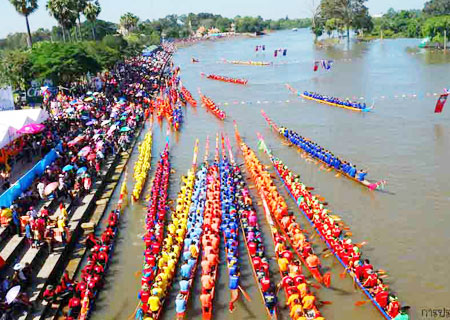

ประเพณี แข่งเรือยาว

ประเพณีแข่งเรือยาวในจังหวัดนครสวรรค์มีความสำคัญและเป็นที่รู้จักในหมู่คนในท้องถิ่นและนักท่องเที่ยว
โดยเฉพาะในช่วงฤดูน้ำหลาก
ซึ่งเป็นช่วงที่เหมาะสมสำหรับการแข่งขัน
นครสวรรค์มีแม่น้ำปิงและแม่น้ำสะแกกรังที่เป็นสถานที่จัดการแข่งขัน
ลักษณะของประเพณีแข่งเรือยาวที่นครสวรรค์:
1. งานประเพณี: งานแข่งเรือยาวมักจัดขึ้นในช่วงเดือนกันยายนถึงพฤศจิกายน ซึ่งเป็นช่วงที่น้ำสูงและมีการเฉลิมฉลองหลายกิจกรรม
2. การแข่งขัน: การแข่งขันจะมีทั้งประเภทเรือยาว และเรือประเภทอื่น ๆ โดยจะมีการแบ่งทีมแข่งขันจากหมู่บ้านและชุมชนต่าง ๆ ซึ่งทุกทีมจะมีการฝึกซ้อมเพื่อเตรียมตัวให้พร้อม
3. การจัดกิจกรรม: นอกจากการแข่งขันเรือแล้ว มักจะมีการจัดกิจกรรมอื่น ๆ เช่น การแสดงศิลปวัฒนธรรม, การจำหน่ายอาหารพื้นเมือง และการจัดตลาดนัด เพื่อเสริมสร้างความสัมพันธ์ในชุมชนและสร้างบรรยากาศที่คึกคัก
4. ความเชื่อ: การแข่งเรือยาวในนครสวรรค์ยังมีความเชื่อเกี่ยวกับการบูชาพระแม่คงคา เพื่อให้มีฝนตกและน้ำในแม่น้ำไม่แห้งขอด
5. การส่งเสริมการท่องเที่ยว: งานแข่งเรือยาวยังเป็นการส่งเสริมการท่องเที่ยวในจังหวัดนครสวรรค์ ทำให้นักท่องเที่ยวทั้งในและต่างประเทศได้มีโอกาสสัมผัสวัฒนธรรมและประเพณีท้องถิ่น
โดยรวมแล้ว ประเพณีแข่งเรือยาวในนครสวรรค์เป็นการผสมผสานระหว่างกีฬา วัฒนธรรม และการเฉลิมฉลอง ซึ่งสร้างความสุขและความสนุกสนานให้กับชุมชนและนักท่องเที่ยวอย่างยิ่ง